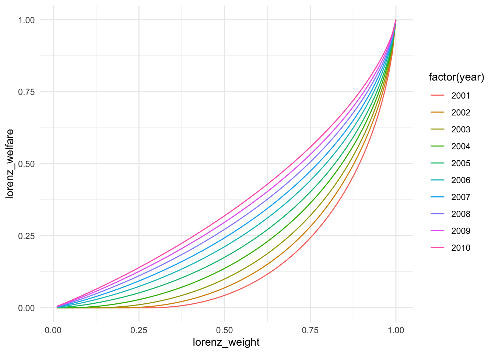

Hlavac, Marek (2022). stargazer: Well-Formatted Regression and Summary Statistics Tables.
R package version 5.2.3. https://CRAN.R-project.org/package=stargazer
Basic Stats
All the measures of this segment must be population-weighted (except for the total number of observations). Please ignore missing data (NAs). The following three tasks make use of the following file:
tag <-"202311081903"base_url <-"https://github.com/randrescastaneda/pub_data/raw/"data_url <-paste0(base_url, tag, "/data/Rtest1/")wdi <- readr::read_rds(paste0(data_url, "wdi_in1.Rds"))
1. Summary statistics of GDP per capita by region
This table shows some stats of GDP per capita by region and year. Total number of observations (not-weighted), mean, sd, min, and max.
wdata <- data %>%group_by(date) %>%#filter(!is.na(gdp)) %>% mutate(world_pop =sum(pop)) %>%ungroup() # world population every yearwdata = wdata %>%mutate(wgt = pop/world_pop) #Create weightssummary(wdata$gdp) #Checking for NAs
Min. 1st Qu. Median Mean 3rd Qu. Max. NA's
436.4 3293.0 8498.0 14860.0 18835.5 120647.8 217
summary(wdata$pop) #Checking for NAs
Min. 1st Qu. Median Mean 3rd Qu. Max.
9.182e+03 2.581e+06 8.321e+06 3.925e+07 2.550e+07 1.411e+09
`summarise()` has grouped output by 'region'. You can override using the
`.groups` argument.
# Round all numeric columns in wdatawdata2 <- wdata2 %>%mutate_if(is.numeric, ~round(., digits =0))
`mutate_if()` ignored the following grouping variables:
• Column `region`
print(wdata2)
# A tibble: 218 × 7
# Groups: region [7]
region date N Mean SD Min Max
<chr> <dbl> <dbl> <dbl> <dbl> <dbl> <dbl>
1 East Asia & Pacific 1990 22 4913 8696 582 32846
2 East Asia & Pacific 1991 22 5105 8895 579 33870
3 East Asia & Pacific 1992 22 5291 8871 597 34049
4 East Asia & Pacific 1993 22 5483 8778 635 33783
5 East Asia & Pacific 1994 22 5740 8822 669 34054
6 East Asia & Pacific 1995 22 6037 9003 709 34868
7 East Asia & Pacific 1996 22 6340 9223 746 35879
8 East Asia & Pacific 1997 22 6538 9258 782 36145
9 East Asia & Pacific 1998 22 6449 9031 817 36099
10 East Asia & Pacific 1999 22 6635 9044 875 37476
# ℹ 208 more rows
2. Aggregate stats
Aggregate the lifeex, gdp, and pov_intl variables by region and date, using the mean, standard deviation, minimum, maximum, and median. You will also show the total population of each region in each year. The data should be long-formatted and population-weighted.
`summarise()` has grouped output by 'region'. You can override using the
`.groups` argument.
wdata3 <- wdata3 %>%arrange(factor(stat, levels=c("mean","sd","min","max","median" )))# Round all numeric columns in wdatawdata3 <- wdata3 %>%mutate_if(is.numeric, ~round(., digits =3))
`mutate_if()` ignored the following grouping variables:
• Column `region`
# Print the resultprint(wdata3)
# A tibble: 1,090 × 7
# Groups: region [7]
region date total_population stat lifeex gdp pov_intl
<chr> <dbl> <dbl> <chr> <dbl> <dbl> <dbl>
1 East Asia & Pacific 1990 1754166013 mean 68.2 4913. 0.59
2 East Asia & Pacific 1991 1779284317 mean 68.4 5105. 0.573
3 East Asia & Pacific 1992 1802946756 mean 68.9 5291. 0.55
4 East Asia & Pacific 1993 1825777375 mean 69.3 5483. 0.523
5 East Asia & Pacific 1994 1848480100 mean 69.6 5740. 0.483
6 East Asia & Pacific 1995 1870755748 mean 70.0 6037. 0.45
7 East Asia & Pacific 1996 1892721009 mean 70.3 6340. 0.41
8 East Asia & Pacific 1997 1914534267 mean 70.7 6538. 0.408
9 East Asia & Pacific 1998 1935514675 mean 71.1 6449. 0.417
10 East Asia & Pacific 1999 1955084080 mean 71.3 6635. 0.386
# ℹ 1,080 more rows
3. Find outliers
Find the outliers of lifeex, gpd, and gini by year above and below 2.5 standard deviations from the mean. Ignore NAs in all your calculations. Remember to weigh by population.
`summarise()` has grouped output by 'region'. You can override using the
`.groups` argument.
print(outliers_by_region_date) # This table shows the total number of outliers above and below 2.5 standard deviations from the mean.
# A tibble: 207 × 5
# Groups: region [7]
region date gdp.out lifeex.out gini.out
<chr> <dbl> <int> <int> <int>
1 East Asia & Pacific 1990 3 0 0
2 East Asia & Pacific 1992 4 0 0
3 East Asia & Pacific 1993 2 0 0
4 East Asia & Pacific 1994 1 0 0
5 East Asia & Pacific 1995 3 3 0
6 East Asia & Pacific 1996 4 0 4
7 East Asia & Pacific 1997 3 0 0
8 East Asia & Pacific 1998 3 0 0
9 East Asia & Pacific 1999 3 0 0
10 East Asia & Pacific 2000 4 0 4
# ℹ 197 more rows
For extra points, you can replicate the chart below using the package {ggplot2}. It shows the lifeex of each country in each year, the weighteds mean of lifeex per year and the 2.5 confidence interval that you already calculated
# Calculate the mean and confidence interval for the entire datasetlifeex_mean <-weighted.mean(wdata$lifeex, w = wdata$wgt, na.rm =TRUE)lifeex_sd <-weighted.sd(wdata$lifeex, w = wdata$wgt, na.rm =TRUE)lifeex_ci <-2.5* lifeex_sdplotdata <- wdata %>%group_by(region, date) %>%filter(!is.na(gdp)) %>%summarise(country = country,lifeex = lifeex )
Warning: Returning more (or less) than 1 row per `summarise()` group was deprecated in
dplyr 1.1.0.
ℹ Please use `reframe()` instead.
ℹ When switching from `summarise()` to `reframe()`, remember that `reframe()`
always returns an ungrouped data frame and adjust accordingly.
`summarise()` has grouped output by 'region', 'date'. You can override using
the `.groups` argument.
# Combine the survey data from l_svy into a single data framesurvey_data <- l_svy %>%map_df(~as.data.frame(.x), .id ="year") %>%mutate(year =as.numeric(gsub("[A-Za-z]", "", year)))# Define the poverty lines in 2017 PPP pricespoverty_lines <-c(2.15, 3.65, 6.85)# Function to calculate the FGT indices for a given poverty linecalculate_FGT <-function(data, line) { data %>%group_by(year) %>%summarise(Headcount_Ratio =sum(weight * (income < line)) /sum(weight),Poverty_Gap =sum((1- (income / line)) * (income < line) * weight) /sum(weight),Poverty_Severity =sum((1- (income / line))^2* (income < line) * weight) /sum(weight) ) %>%mutate(Poverty_Line = line)}# Calculate the FGT indices for each poverty line and bind the resultspoverty_indicators<- poverty_lines %>%map_df(~calculate_FGT(survey_data, .))# Print the combined results data frameprint(poverty_indicators)
extra3 <-ggplot(result_lc, aes(group = year)) +geom_line(aes(x = lorenz_weight, y = lorenz_welfare, color =factor(year))) +#geom_point(aes(x = lorenz_weight, y = lorenz_welfare, color = factor(year))) +theme_minimal()print(extra3)

6. Gini coefficient
Without using any auxiliary package, create a function that estimate the Gini coefficient. Then, estimate it for every single year.
gini_data <- l_svy %>%map_df(~as.data.frame(.x), .id ="year") %>%mutate(year =as.numeric(gsub("[A-Za-z]", "", year)))#Define a function to calculate gini coef for every yearcalculate_gini <-function(welfare, weight) { weighted_welfare <- welfare * weight # Compute weighted welfare weighted_welfare_lag <- collapse::flag(weighted_welfare, fill =0)# Compute area under the curve using# Area of trapezoid = Base * Average height v <- (cumsum(weighted_welfare_lag) + (weighted_welfare /2)) * weight auc <-sum(v) # Area Under the Curve# Compute Area Under the Lorenz Curve# Normalize auc so it is always between 0 and 0.5 auc <- (auc /sum(weight)) /sum(weighted_welfare)# Compute Gini gini <-1- (2* auc)return(gini)}# Calculate the FGT indices for each poverty line and bind the resultsresults_gini <- gini_data %>%group_by(year) %>%summarise(Gini =calculate_gini(income, weight))